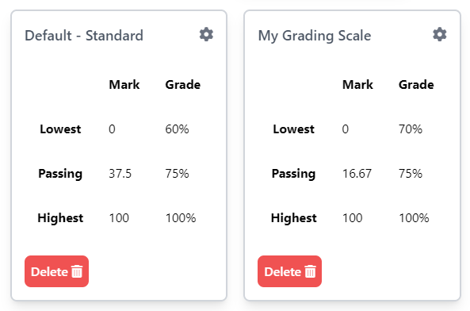

Your Online Class Grading Management System

Your Online Class Grading Management System
Our website provides teachers with the ability to automatically compute grades for any activities quizzes, exams, and assignments, saving them valuable time and effort. Teachers and students receive real-time updates on grade calculations, attendance records, and score entries, ensuring that they always have access to the latest information.
Teachers can access comprehensive grade statistics and analytics for their classes, enabling them to gain insights into student performance and identify areas for improvement.
Students can conveniently view their scores for quizzes and exams, allowing them to track their progress and understand their academic performance.
The website offers customizable grading scales, allowing teachers to set up their preferred grading criteria and weightage for different assessment components.
